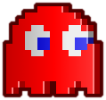

HOW TO PLAY
You control Pac-Man as you guide him through the maze and on to victory. Pac-Man's one and only goal is to gobble up every pellet (and power pellet) in the maze. He must avoid contact with the four ghosts, unless they are temporarily afraid of Pac-Man as result of eating one of the four power pellets located in each corner of the maze. Pac-Man moves faster when he's not eating pellets than when he is. He is also capable of turning around corners faster than the ghosts, so make as many turns as possible when the ghosts are on his tail.
1980
CREATOR:
Toru Iwatani
SCORING
| Regular Pellets | 10 |
| Power Pellets | 50 |
| 1st Ghost | 200 |
| 2nd Consecutive Ghost | 400 |
| 3rd Consecutive Ghost | 800 |
| 4th Consecutive Ghost | 1600 |
CHARACTERS
Pacman

Blinky
Inky
Clyde
Pinky
Scared Ghost